pendulum-autoencoder
These figures accompany the paper Symplectic autoencoders for model reduction of Hamiltonian systems by B. Brantner and M. Kraus (arXiv:2312.10004): they study a symplectic autoencoder trained on the pendulum and what its latent space does at the separatrix.
Several figures draw measurements on the trained weights or on the training set. After the symplectic autoencoder is re-trained, or the training set changes, they must be regenerated from the new network and then resynced here; the build of this package does not recompute them.
- From the weights, in a generated block:
two-charts(panel (ii)),branch-invariants(which also has hand-written values),upper-branch,threshold-split-paperandthreshold-split-sep(the measured point),fold-currentandfold-separatrix. - From the weights, values set by hand:
atlas-vs-chart(panel (b)),obstruction-cases(the circle ratio). - From the training set only:
covered-half,rotating-cap,atlas-vs-chart(panel (a)),threshold-actions-paper,threshold-actions-sepandthreshold-map; the excluded triangle ofthreshold-split-paperandthreshold-split-sep.
The other figures of this page are analytic or schematic, and a re-training does not touch them.
pendulum-phase-portrait
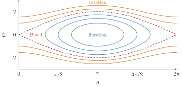
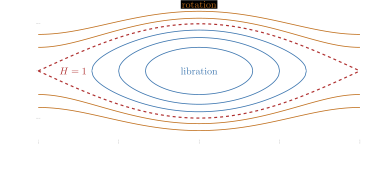
pendulum-phase-portrait: The phase portrait of the pendulum: librating orbits (blue) around θ = π, rotating orbits (orange), and the separatrix (red, dashed) through the unstable equilibria.
light: PDF · SVG · PNG 150 · 300 · 600


dark: PDF · SVG · PNG 150 · 300 · 600


pendulum-solution-manifold
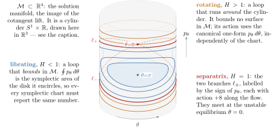
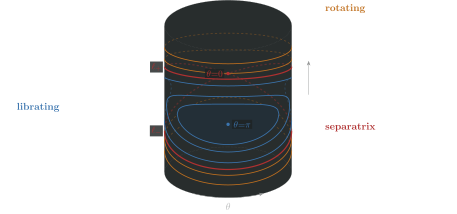
pendulum-solution-manifold: The solution manifold of the lifted pendulum, the phase portrait with its edges θ = 0 and θ = 2π glued into a cylinder.
light: PDF · SVG · PNG 150 · 300 · 600


dark: PDF · SVG · PNG 150 · 300 · 600


angle-atlas
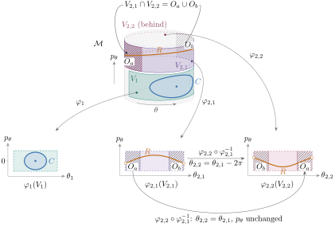
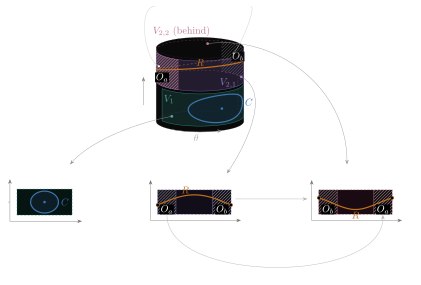
angle-atlas: Angle charts on the pendulum's cylinder: a librating orbit fits in one chart, a rotating orbit needs two.
light: PDF · SVG · PNG 150 · 300 · 600


dark: PDF · SVG · PNG 150 · 300 · 600


librating-area
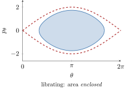
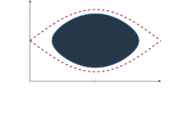
librating-area: The angular action of a librating pendulum orbit, the area it encloses.
light: PDF · SVG · PNG 150 · 300 · 600


dark: PDF · SVG · PNG 150 · 300 · 600


rotating-area
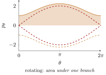
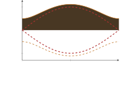
rotating-area: The angular action of a rotating pendulum orbit, the area under its branch down to p = 0.
light: PDF · SVG · PNG 150 · 300 · 600


dark: PDF · SVG · PNG 150 · 300 · 600


separatrix-limit-below
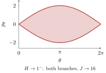
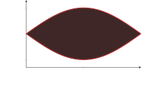
separatrix-limit-below: The librating limit at the separatrix: the area enclosed by both separatrix branches, 16.
light: PDF · SVG · PNG 150 · 300 · 600


dark: PDF · SVG · PNG 150 · 300 · 600


separatrix-limit-above
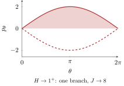
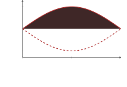
separatrix-limit-above: The rotating limit at the separatrix: the area under one separatrix branch, 8.
light: PDF · SVG · PNG 150 · 300 · 600


dark: PDF · SVG · PNG 150 · 300 · 600


action-angle-chart
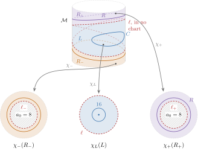
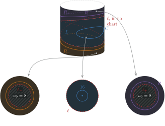
action-angle-chart: The action–angle atlas of the pendulum: the cylinder with its librating region and two rotating families shaded, and their three charts, a disk of area 16 and two planes outside holes of area 8, in which every orbit is a circle enclosing its action.
light: PDF · SVG · PNG 150 · 300 · 600


dark: PDF · SVG · PNG 150 · 300 · 600


covered-half


covered-half: The pendulum's cylinder with the sampled families of training orbits marked, and the hatched half that carries no trajectory.
light: PDF · SVG · PNG 150 · 300 · 600


dark: PDF · SVG · PNG 150 · 300 · 600


rotating-cap


rotating-cap: The exact encodings of the two rotating families of the pendulum, each a family of closed curves around a cap, at true area.
light: PDF · SVG · PNG 150 · 300 · 600


dark: PDF · SVG · PNG 150 · 300 · 600


latent-invariant
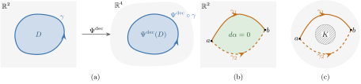
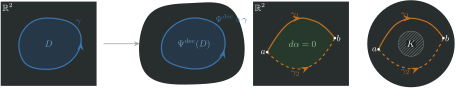
latent-invariant: Why a symplectic decoder preserves the action of every closed latent curve: Stokes' theorem on a disk, path independence of a closed one-form, and what changes on a domain with a hole.
light: PDF · SVG · PNG 150 · 300 · 600


dark: PDF · SVG · PNG 150 · 300 · 600


cylinder-to-poloidal
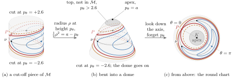
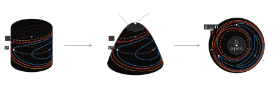
cylinder-to-poloidal: The pendulum's cut-off cylinder mapped to a planar chart, with librating orbits, the separatrix branches and a rotating level.
light: PDF · SVG · PNG 150 · 300 · 600


dark: PDF · SVG · PNG 150 · 300 · 600


two-charts
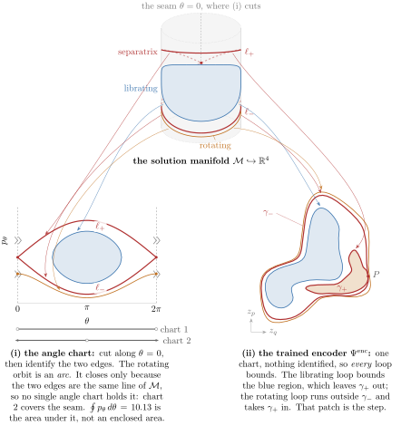
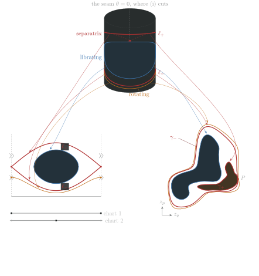
two-charts: A librating orbit, the separatrix and a rotating orbit of the pendulum in the angular representation and in the latent plane of a trained symplectic autoencoder.
light: PDF · SVG · PNG 150 · 300 · 600


dark: PDF · SVG · PNG 150 · 300 · 600


obstruction-cases
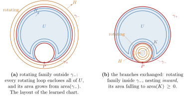
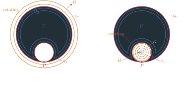
obstruction-cases: The two cases of the separatrix obstruction: the rotating family outside or inside the pair of separatrix images.
light: PDF · SVG · PNG 150 · 300 · 600


dark: PDF · SVG · PNG 150 · 300 · 600


pinched-pair
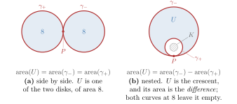
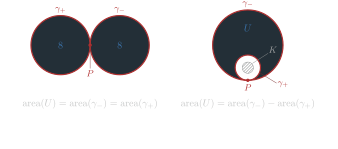
pinched-pair: The two layouts of exactly reconstructed separatrix images, side by side and nested.
light: PDF · SVG · PNG 150 · 300 · 600


dark: PDF · SVG · PNG 150 · 300 · 600


atlas-vs-chart
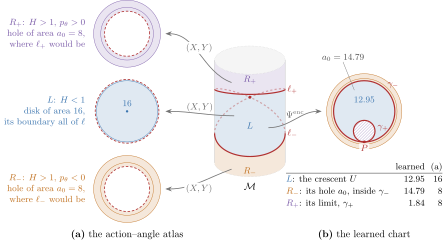
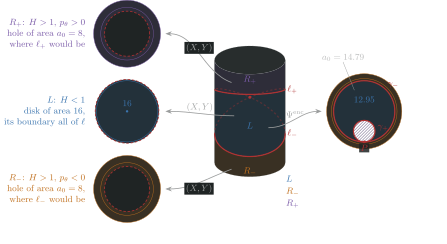
atlas-vs-chart: The pendulum's cylinder charted two ways: by the action-angle atlas and by a single latent chart of a trained encoder.
light: PDF · SVG · PNG 150 · 300 · 600


dark: PDF · SVG · PNG 150 · 300 · 600


branch-invariants
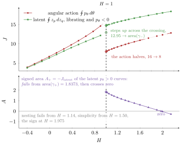
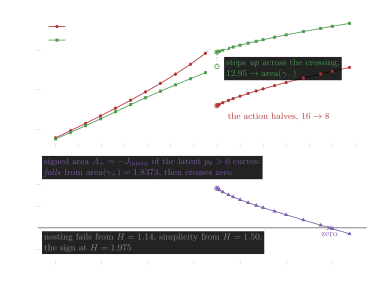
branch-invariants: The latent invariant of a trained symplectic autoencoder against the angular action, on both rotating branches of the pendulum.
light: PDF · SVG · PNG 150 · 300 · 600


dark: PDF · SVG · PNG 150 · 300 · 600


upper-branch
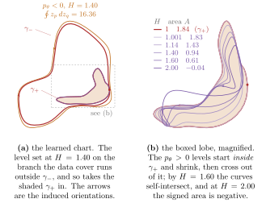
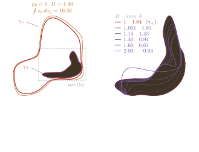
upper-branch: Where a trained encoder sends the rotating level sets of the pendulum with positive momentum.
light: PDF · SVG · PNG 150 · 300 · 600


dark: PDF · SVG · PNG 150 · 300 · 600


threshold-actions-paper
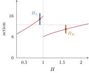
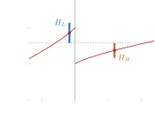
threshold-actions-paper: The angular action across the separatrix with the error bars of the nearest librating and rotating training levels, for the paper's training grid.
light: PDF · SVG · PNG 150 · 300 · 600


dark: PDF · SVG · PNG 150 · 300 · 600


threshold-actions-sep
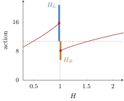
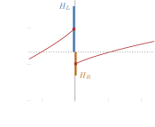
threshold-actions-sep: The angular action across the separatrix with the error bars of the nearest librating and rotating training levels, for a grid placed relative to the separatrix.
light: PDF · SVG · PNG 150 · 300 · 600


dark: PDF · SVG · PNG 150 · 300 · 600


threshold-map
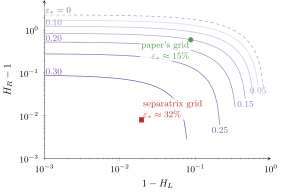
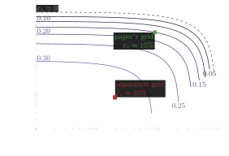
threshold-map: The error threshold of an embedding as a function of the distances of the two training levels from the separatrix, on logarithmic axes.
light: PDF · SVG · PNG 150 · 300 · 600


dark: PDF · SVG · PNG 150 · 300 · 600


threshold-split-paper
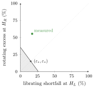
threshold-split-paper: The errors an embedding can make on the two training orbits nearest the separatrix, with the excluded region hatched, for the paper's training grid.
light: PDF · SVG · PNG 150 · 300 · 600


dark: PDF · SVG · PNG 150 · 300 · 600


threshold-split-sep
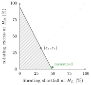
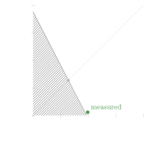
threshold-split-sep: The errors an embedding can make on the two training orbits nearest the separatrix, with the excluded region hatched, for a grid placed relative to the separatrix.
light: PDF · SVG · PNG 150 · 300 · 600


dark: PDF · SVG · PNG 150 · 300 · 600


fold-current
fold-current: Images of librating level sets and of the separatrix branches under a trained encoder whose librating images are nested.
light: PDF · SVG · PNG 150 · 300 · 600


dark: PDF · SVG · PNG 150 · 300 · 600


fold-separatrix
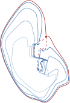
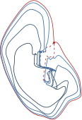
fold-separatrix: Images of librating level sets and of the separatrix branches under an encoder trained on a grid placed relative to the separatrix, where the librating images cross.
light: PDF · SVG · PNG 150 · 300 · 600


dark: PDF · SVG · PNG 150 · 300 · 600


magnetic-well
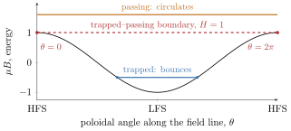
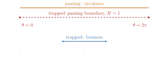
magnetic-well: The pendulum potential as the magnetic well along a field line, with a trapped and a passing particle.
light: PDF · SVG · PNG 150 · 300 · 600


dark: PDF · SVG · PNG 150 · 300 · 600


banana-layout
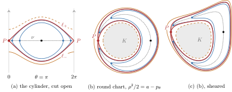
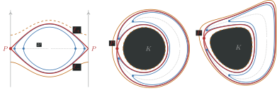
banana-layout: The same curves of the pendulum's cylinder in three symplectic charts, on one scale.
light: PDF · SVG · PNG 150 · 300 · 600


dark: PDF · SVG · PNG 150 · 300 · 600


banana-any-chart
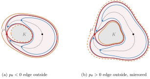
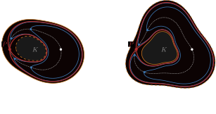
banana-any-chart: The same curves in two continuous injective charts that are neither round nor symplectic.